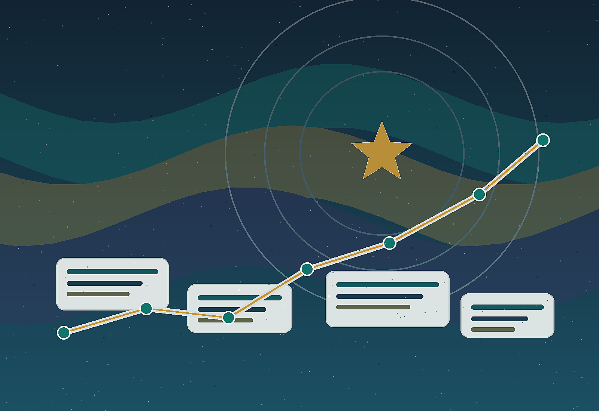

看見起點
先承認現況，再調整打法。

學習完成度
完成 7 個練習後，匯出你的富邦之星行動稿。
一、低標先立住
第一年低標不是故事包裝，而是提醒：辛苦可以被理解，不能成為停下來的理由。
先面對理由，才有行動。
先承認現況，再調整打法。
富邦之星考驗每月活動量。
低標不是天花板，是最低動作量。
累可以休息，但不能拿來放過自己。
先相信人，才願意問問題。
觀念先通，商品才有位置。
保險是工具，不是開場白。
二、類 NPSS：名單後面不是約訪，是認同
類 NPSS 的重點，是把名單推進到認同：認同人、認同觀念、認同保險。沒有認同，專業也容易變成推銷。
三、約訪不尷尬
約問卷就做問卷，約健診就做健診。目的清楚，對方才有安全感。
不要只對業務有利，也要讓對方有收穫。
四、名單水池
信用卡、產險、車險、節日、喜好與服務，都是接觸入口。每個月有主題，名單才會流動。
六、挫折復原
撤件、住院、月底差一點，都會發生。重點不是不難過，而是別停太久。
休息就休息；工作就做下一步。
七、團隊複利
主管做什麼，夥伴就學什麼。穩定低標、服務生根、團隊複利，會形成文化。
自己先有低標，才帶得出方法。
長期服務，才會有加保與轉介紹。
當夥伴也穩定，文化才會長出來。
課後行動稿
把認同、約訪、水池、社群與挫折復原，落成一週內能做的事。
社群要有立場
轉發不是經營。把事件寫成你的觀點，才會吸引認同你的人。
五、客戶心中的位置
讓客戶遇事想到你。
社群與服務，是你在客戶心中的定位。平常有輸出，關鍵時刻才會被想起。
社群貼文練習